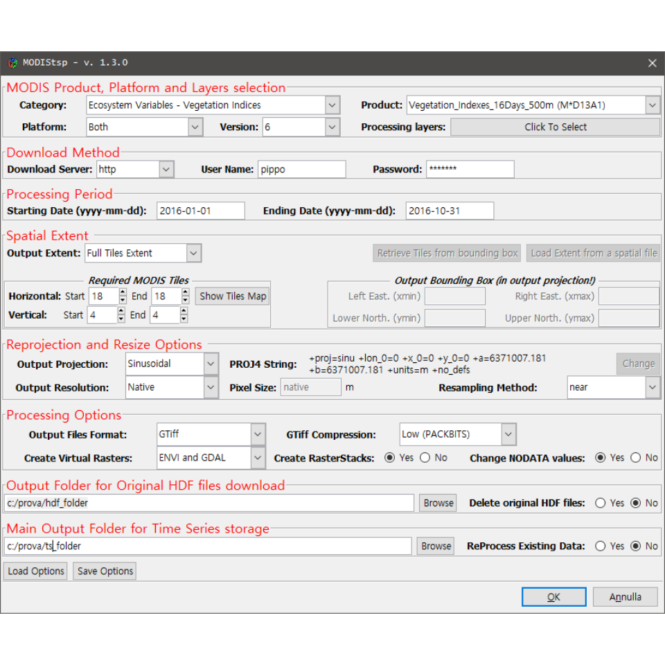
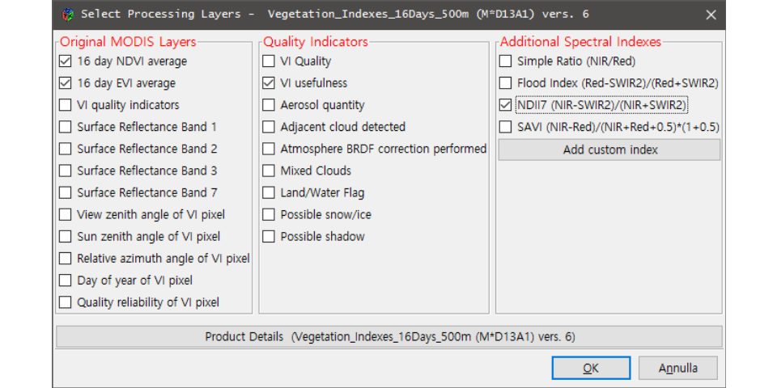
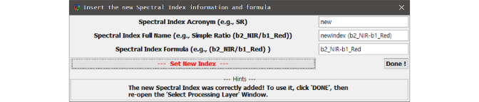

- MODIStsp
- News !
- Installation
- Running the tool
- Output format and naming conventions
- Accessing and analyzing the processed time series from R
- Citation
- Installing R and GDAL


MODIStsp
MODIStsp is a "R" package devoted to automatizing the creation of time series of rasters derived from MODIS Land Products data. MODIStsp allows to perform several preprocessing steps (e.g., download, mosaicking, reprojection and resize) on MODIS data available within a given time period. Users have the ability to select which specific layers of the original MODIS HDF files they want to process. They also can select which additional Quality Indicators should be extracted from the aggregated MODIS Quality Assurance layers and, in the case of Surface Reflectance products, which Spectral Indexes should be computed from the original reflectance bands. For each output layer, outputs are saved as single-band raster files corresponding to each available acquisition date. Virtual files allowing access to the entire time series as a single file can be also created. All processing parameters can be easily selected with a user-friendly GUI, although non-interactive execution exploiting a previously created Options File is possible. Stand-alone execution outside an "R" environment is also possible, allowing to use scheduled execution of MODIStsp to automatically update time series related to a MODIS product and extent whenever a new image is available.
An extended description of MODIStsp functionalities is provided in the package vignette (Click on "Raw" at the beginning of the document to download the pdf file)
An article about MODIStsp was also recently published on the "Computers & Geosciences" journal. You can find it here.
Solutions to common problems can be found in MODIStsp FAQ
Please report any problems in our issues GitHub page.
MODIStsp is developed and maintained by L.Busetto and L.Ranghetti, from the Institute of Remote Sensing of Environment - National Research Council - Italy (CNR-IREA)
News !
- 11/05/2016 - MODIStsp v1.3.0 released, supporting MODIS v006 data
MODIStsp v1.3.0 has been finally released. The major improvement consists in now allowing download and preprocessing of MODIS Collection 006 datasets. Other changes concern improvements in the GUI, introduction of off-line functionality and various bug fixing. You can see the changelog here. Please report any issues you may encounter in our issues GitHub page.:
- 11/03/2016 - MODIStsp FAQ
Hints for solving common installation, downloading and processing problems are now provided in our FAQ page.
Installation
IMPORTANT: MODIStsp requires R v >= 3.2.1 and GDAL (Geospatial Data Abstraction Library) v >= 1.11.1 To be installed in your system. Brief instructions for installing R and GDAL can be found HERE.
On Windows
- Install and load the
gWidgetsRGtk2package:
install.packages("gWidgetsRGtk2")
library(gWidgetsRGtk2)Upon loading the package, an error window will probably appear. Don't worry! This is just signaling that libatk-1.0-0.dll is missing from your system. This is due to the fact that library "GTK+" is not yet installed on your system and needs to be installed. To do so, press "OK". A new window dialog window will appear, asking if you want to install "GTK+". Select "Install GTK" and then "OK" . Windows will download and install the GTK+ library. When it finishes, the RSession will be restarted and you should be ready to go!1
- Install MODIStsp package from GitHub. (You'll need to have the "devtools" package installed and loaded)
install.packages("devtools")
library(devtools)
install_github("lbusett/MODIStsp")On Linux systems
-
Install the following required dependencies:
- Cairo >= 1.0.0, ATK >= 1.10.0, Pango >= 1.10.0, GTK+ >= 2.8.0, GLib >= 2.8.0 (required by package
RGtk2) - Curl (required by package
curl) - GDAL >= 1.6.3, PROJ.4 >= 4.4.9 (required by package
rgdal)
On Debian and Ubuntu-based systems, to install packages open a terminal and type
sudo apt-get install r-cran-cairodevice r-cran-rgtk2 libcairo2-dev libatk1.0-dev libpango1.0-dev libgtk2.0-dev libglib2.0-dev libcurl4-openssl-dev libgdal-dev libproj-dev
On rpm-base systems, to install packages open a terminal and type
sudo yum install libcairo2-devel libatk1.0-devel libpango1.0-devel gtk2 gtk2-devel glib2-devel libcurl4-devel gdal-devel proj-devel
- Cairo >= 1.0.0, ATK >= 1.10.0, Pango >= 1.10.0, GTK+ >= 2.8.0, GLib >= 2.8.0 (required by package
-
From R install the libraries
gWidgetsRGtk2anddevtools:install.packages(c("devtools","gWidgetsRGtk2")) Install MODIStsp package from GitHub (you'll need to have the "devtools" package loaded):
library(devtools)
install_github("lbusett/MODIStsp")Dependencies
MODIStsp exploits functionalities of several other "R" packages. In particular, the following packages are imported:
bitops (>= 1.9.6), data.table (>= 1.9.6), gdalUtils (>= 2.0.1.7), gWidgets (>= 0.0-54), hash (>= 2.2.6), plyr (>= 1.8.3), raster (>= 2.5-2), RCurl (>= 1.95-4.8), rgdal (>= 1.1-8), rgeos (>=0.3-8), xts (>= 1.0-10), sp (>= 1.2-2), stringr (>= 1.0.0), XML (>= 3.98-1.1), pacman, xml2 (>= 0.1.2), xts
, while the following are suggested:
knitr, rmarkdown, png, grid,gWidgetsRGtk2.
Running the tool
Interactive Execution: the MODIStsp GUI
To run the tool in interactive mode, load the package and launch the MODIStsp function, with no parameters
library(MODIStsp)
MODIStsp()This will open a GUI from which processing options can be specified and eventually saved (or loaded) (see below for details). The main available processing options are described in detail in the following.

MODIS Product, Platform and Layers
Allows to select the MODIS product of interest using the "Category" and "Product" drop down menus. You can also select which MODIS platform(s) should be considered for download and creation of the time series ("Terra", "Aqua" or "Both"), and which version of the product - 5 or 6 (when available) - should be considered. After selecting the product, pushing the "Click to Select" button opens the "Select Processing Layers" GUI panel, from which you must select which MODIS original and/or derived QI and SI layers should be processed:

- The left-hand frame allows to select which original MODIS layers should be processed.
- The central frame allows to select which Quality Indicators should be extracted from the original MODIS Quality Assurance layers.
- For MODIS products containing surface reflectance data, the right-hand frame allows to select which additional Spectral Indexes should be computed (The lists of original MODIS layers, QIs and Sis available for the selected product are automatically retrieved from the "MODIStsp_Products_Opts" XML file distributed with the package in /ExtData subfolder).
The following commonly used Spectral Indexes are available for computation by default:
| Index Acronym | Index name and reference |
|---|---|
| NDVI | Normalized Difference Vegetation Index [Rouse - 1973] |
| EVI | Enhanced Vegetation Index [Huete - 2002] |
| SR | Simple Ratio[Tucker - 1979] |
| NDFI | Normalized Difference Flood Index [Boschetti - 2014] |
| NDII7 (NDWI) | Normalized Difference Infrared Index - Band 7 [Hunt -1989] |
| SAVI | Soil Adjusted Vegetation Index [Huete - 1988] |
| NDSI | Normalized Difference Snow Index [Hall - 2002] |
| NDII6 | Normalized Difference Infrared Index - band 6 [Hunt - 1989] |
| GNDVI | Green Normalized Difference Vegetation Index [Gitelson - 1998] |
| RGRI | Red Green Ratio index [Gamon - 1999] |
| GRVI | Green-red ratio vegetation index [Tucker - 1979] |
You can however specify other SIs to be computed without modifying MODIStsp source code by clicking on the "Add Custom Index" button, which allow to provide info related to the new desired SI using a simple GUI interface.

Provided information (e.g., correct bandnames, computable formula, etc...) is automatically checked upon clicking "Set New Index". On success, the new index is added in the list of available ones for all products allowing its computation. Clicking "Done !" returns to the main.
Download Method
Allows to specify which download method should be used. Available choices are:
http: download through ftp from NASA lpdaac http archive (http://e4ftl01.cr.usgs.gov). This requires providing a user name and password, which can be obtained by registrering an account at the address https://urs.earthdata.nasa.gov/profile;
ftp: download from NASA ftp archive (ftp://ladsweb.nascom.nasa.gov/);
offline: process/reprocess HDF files already available on your PC without downloading from NASA -- useful if you have an aexisting archive of HDF images, or to reprocess data already downloaded via
MODIStsp(for example, to create time series for an additional layer).
Processing Period
Allows to specify the starting and ending dates to be considered for the creation of the time series. Dates must be provided in the yyyy--mm--dd format (e.g., 2015-01-31)
Spatial Extent
Allows to define the area of interest for the processing. Two main options are possible:
Full Tiles Extent: you must specify which MODIS tiles he would like to process using the "Start" and "End" horizontal and vertical sliders in the "Required MODIS Tiles" frame. During processing, data from the different tiles is mosaiced, and a single file covering the total area is produced for each acquisition date (Note: pressing the "show map" button, a representation of the MODIS tiles grid is shown to facilitate the selection).
-
Resized: you can specify the spatial extent of the desired outputs either by:
manually inserting the coordinates of the Upper Left and Lower Right corners of the area of interest in the "Bounding Box" frame. Coordinates of the corners must be provided in the coordinate system of the selected output projection;
pressing the "Load Extent from a Spatial File" and selecting a raster or vector spatial file. In this case, the bounding box of the selected file is retrieved, converted in the selected output projection, and shown in the "Bounding Box" frame. Required input MODIS tiles are also automatically retrieved from the output extent, and the tiles selection sliders modified accordingly.
Reprojection and Resize
Allows to specify the options to be used for reprojecting and resizing the MODIS images. In particular:
the "Output Projection" menu allows to either select one of the pre-defined output projections or specify a user-defined one by selecting "User Defined" and then inserting a valid "Proj4" string in the pop-up window. Validity of the Proj4 string is automatically checked, and error messages issued if the check fails;
the "Output Resolution", "Pixel Size" and "Reprojection Method" menus allow to specify whether output images should inherit their spatial resolution from the original MODIS files, or be resampled to a user-defined resolution. In the latter case, output spatial resolution must be specified in the measure units of the selected output projection. At the moment, the resampling method can instead be chosen among "Nearest Neighbour" and "Mode" (Useful for downsampling purposes). Other resampling methods (e.g., bilinear, cubic) are not currently supported since i) they cannot be used for resampling of categorical variables such as the QA and QI layers, and ii) using them on continuous variable (e.g., reflectance, VI values) without performing an a-priori data cleanind would risk to contaminate the values of high-quality observations with those of low-quality ones.
Processing Options
Allows first of all to specify the format desired for the output images. Two of the most commonly formats used in remote sensing applications are available at the moment: ENVI binary and GeoTiff. If GeoTiff is selected, the type of file compression can be also specified among "None", "PACKBITS", "LZW" and "DEFLATE".
You can then specify if virtual multitemporal files should be created. These virtual files allow access to the entire time series of images as a single file without the need of creating large multitemporal raster images. Available virtual files formats are ENVI metafiles and GDAL "vrt" files. Additionally, you can select if you desire to save the time series also as "R" rasterStack objects (with temporal information added through the "setZ" method of the raster package). This may be useful in order to easily access the preprocessed MODIS data within "R" scripts.
Finally, you can select if the NoData values of MODIS layers should be kept at their original values, or changed to those specified within the "MODIStsp_Products_Opts" XML file. By selecting "Yes" in the "Change Original NODATA values" checkbox, NoData of outputs are set to the largest integer value possible for the data type of the processed layer (e.g., for 8-bit unsigned integer layers, NoData is set always to 255, for 16-bit signed integer layers to 32767, and for 16-bit unsigned integer layers to 65535). Information about the new NoData values is stored both in the output rasters, and in the XML files associated with them.
Main Output Folder for Time Series Storage
Allows to specify the main folder where the pre-processed time series data will be saved stored. The "Reprocess Existing Data" checkbox allows to specify if images already available should be reprocessed if a new run of MODIStsp is launched with the same output folder. If set to "No", MODIStsp skips dates for which output files following the MODIStsp naming conventions are already present in the output folder. This allows to incrementally extend MODIS time series without reprocessing already available dates.
Output Folder for Original HDF Storage
Allows to specify the folder where downloaded original MODIS HDF files are stored. The "delete original HDF files" checkbox allows to specify if the downloaded images should be deleted from the file system at the end of the processing. To avoid accidental file deletion, this is always set to "No" by default, and a warning is issued before execution whenever the selection is changed to "Yes".
Non-Interactive Execution and scheduled processing
MODIStsp can be also launched in non-interactive mode by setting the optional GUI parameter to FALSE, and the "Options_File" parameter to the path of a previously saved Options file. This allows to exploit MODIStsp functionalities within generic "R" processing scripts
library(MODIStsp)
# --> Specify the path to a valid options file saved in advance
options_file = "X:/yourpath/youroptions.json" # generated from the GUI
MODIStsp(gui = FALSE, options_File = options_file)Single parameters can be also be directly passed to the MODIStsp() function; for example:
library(MODIStsp)
options_file = "X:/yourpath/youroptions.json"
MODIStsp(gui = FALSE, options_File = options_file, download_server = "ftp")will launch MODIStsp with the parameters saved in "X:/yourpath/youroptions.json" options file, with the exception of download_server parameter, which is set to "ftp". Details about the parameter names can be found with ?MODIStsp.
Specifying also the "spatial_file_path" parameter overrides the output extent of the selected Options File. This allows to perform the same preprocessing on different extents using a single Options File, by looping on an array of spatial files representing the desired output extents.
For example:
# Create a character array containing a list of shapefiles (or other spatial files)
extent_list = list.files("X:/path/containing/some/shapefiles/", "\\.shp$")
# loop on the list of spatial files and run MODIStsp using each of them to automatically
# define the output extent (A separate output folder is created for each input spatial file).
for (single_shape in extent_list) {
MODIStsp(gui = FALSE, options_File = "X:/yourpath/youroptions.json",
spatial_file_path = single_shape )
}Standalone execution and scheduled processing
MODIStsp can be also executed as a standalone application ; to do it, from R launch the function MODIStsp_install_launcher(). In a Linux operating system this function creates a desktop entry (accessible from the menu in the sections "Science" and "Geography") and a symbolic link in a known path (default: /usr/bin/MODIStsp). In Windows, a link in the Start Menu and optionally a desktop shortcut are created. See ?install_MODIStsp_launcher for details and path customisations.
Double-clicking the files or launching them from a shell without parameters launches MODIStsp in interactive mode. Non-interactive mode is triggered by adding the "-g" argument to the call, and specifying the path to a valid Options File as "-s" argument:
- Linux:
MODIStsp -g -s "/yourpath/youroptions.RData"(seeMODIStsp -hfor details). - Windows:
your_r_library\MODIStsp\ExtData\Launcher\MODIStsp.bat -g -s "yourpath/youroptions.RData"(seeC:\Users\you\Desktop\MODIStsp -hfor details).
If you do not want to install any link, launchers can be found in the subdirectory "MODIStsp/ExtData/Launcher" of your library path.
Standalone non-interactive execution can be used to periodically and automatically update the time series of a selected product over a given study area. To do that, you should simply: 1) Open the MODIStsp GUI, define the parameters of the processing specifying a date in the future as the "Ending Date" and save the processing options. Then quit the program
-
Schedule non-interactive execution of the launcher installed as seen before (or located in the subdirectory "MODIStsp/ExtData/Launcher" of your library path) as windows scheduled task (or linux "cron" job) according to a specified time schedule, specifying the path of a previously saved Options file as additional argument :
-
Linux: edit your crontab by opening a terminal and type:
crontab -e
Then add an entry for the launcher. For example, if you have installed it in /usr/bin and you want to run the tool every day at 23.00, add the following row:
0 23 * * * /bin/bash /usr/bin/MODIStsp -g -s "/yourpath/youroptions.RData"
Windows: create a Task following this instructions; add the path of the MODIStsp.bat launcher as Action (point 6), and specify
-g -s "X:/yourpath/youroptions.RData"as argument.
-
Output format and naming conventions
Output raster files are saved in specific subfolders of the main output folder. A separate subfolder is created for each processed original MODIS layer, Quality Indicator or Spectral Index. Each subfolder contains one image for each processed date, created according to the following naming conventions:
"ProdCode"_"Layer"_"YYYY"_"DOY"."ext" (e.g.,MOD13Q1_NDVI_2000_065.dat)
ProdCode is the code name of the MODIS product from which the image was derived (e.g., MOD13Q1), Layer is a short name describing the dataset (e.g., b1_Red, NDII, UI), YYYY and DOY corresponds to the year and DOY (Day of the Year) of acquisition of the original MODIS image, and ext is the file extension (.tif for GTiff outputs, or .dat for ENVI outputs).
ENVI and/or GDAL virtual time series files and RasterStack RData objects are instead stored in the "Time_Series" subfolder if required.
Naming convention for these files is as follow:
"ProdCode"_"Layer"_"StartDOY"_"StartYear_"EndDOY"_"EndYear2_"suffix".ext"
(MOD13Q1_NDVI_49_2000_17_2015_RData.dat)
where suffix indicates the type of virtual file (ENVI, GDAL or RData), while StartDOY, StartYear, EndDOY and EndYear indicate the temporal extent of the time serie created.
Accessing and analyzing the processed time series from R
Preprocessed MODIS data can be retrieved within R scripts either by accessing the single-date raster files, or by loading the saved RasterStack objects. This second option allows accessing the complete data stack and analyzing it using the functionalities for raster/raster time series analysis, extraction and plotting provided for example by the raster or rasterVis packages. MODIStsp provides however an efficient function _MODIStsp\_extract_ for extracting time series data at specific locations. The function takes as input a RasterStack object with temporal information created by MODIStsp, the starting and ending dates for the extraction and a standard _Sp*_ object (or an ESRI shapefile name) specifying the locations (points, lines or polygons) of interest, and provides as output a _ xts object containing time series for those locations. If the input is of class SpatialPoints, the output object contains one column for each point specified, and one row for each date. If it is of class SpatialPolygons (or SpatialLines), it contains one column for each polygon (or each line), with values obtained applying the function specified as the "FUN" argument (e.g., mean, standard deviation, etc.) on pixels belonging to the polygon (or touched by the line), and one row for each date.
As an example the following code:
#Set the input paths to raster and shape file
infile = 'in_path/MOD13Q1_MYD13Q1_NDVI_49_2000_353_2015_RData.RData'
shpname = 'path_to_file/rois.shp'
#Set the start/end dates for extraction
startdate = as.Date("2010-01-01")
enddate = as.Date("2014-12-31")
#Load the RasterStack
inrts = get(load(infile))
# Compute average and St.dev
dataavg = MODIStsp_extract(inrts, shpname, startdate, enddate, FUN = 'mean', na.rm = T)
datasd = MODIStsp_extract (inrts, shpname, startdate, enddate, FUN = 'sd', na.rm = T)
# Plot average time series for the polygons
plot.xts(dataavg) loads a RasterStack object containing 8-days 250 m resolution time series for the 2000-2015 period and extracts time series of average and standard deviation values over the different polygons of a user's selected shapefile on the 2010-2014 period.
Citation
To cite MODIStsp please use:
L. Busetto, L. Ranghetti (2016) MODIStsp: An R package for automatic preprocessing of MODIS Land Products time series, Computers & Geosciences, Volume 97, Pages 40-48, ISSN 0098-3004, http://dx.doi.org/10.1016/j.cageo.2016.08.020, URL: https://github.com/lbusett/MODIStsp.
Installing R and GDAL
Installing R
Windows
Download and install the latest version of R which can be found here.
Linux
Please refer to the documentation which can be found here, opening the directory relative to your Linux distribution. The documentation provides instruction to add CRAN repositories and to install the latest R version. With Ubuntu 15.10 Wily (and newer) this step is not mandatory (altough recommended), since packaged version of R is >= 3.2.1 (although not the latest); in this case, user can insall R by simply typing in a terminal
sudo apt-get install r-baseInstalling GDAL >= 1.11.1
Windows
The easiest way to install GDAL on Windows is from the OSGeo4W Website
- Open the OSGeo4W Website
- In the Quick Start for OSGeo4W Users section, select the download of 32bit or 64bit of OSGeo4W network installer
Run the installer
- Easiest Option:
- Advanded Option:
- Select Advanced Install, then click on "Next" a few times until you reach the "Select Packages" screen.
- Click on "Commandline_Utilities_", and on the list look for "_gdal: The GDAL/OGR library..." entry
- Click on "Skip": the word "skip" will be replaced by the current GDAL version number
- Click on "Next" a few times to install GDAL
Debian and Ubuntu-based systems
Ensure that your repositories contain a version of
gdal-bin>= 1.11.1. In particular, official repositories of Ubuntu 15.04 Vivid (or older) and Debian Jessie (or older) provide older versions of GDAL, so it is necessary to add UbuntuGIS-unstable repository before installing. To do this, follow instructions here). With Ubuntu 15.10 Wily (and newer) this step is not mandatory, altough recommended in order to have updated version of GDAL installed.-
To install GDAL, open a terminal and type
sudo apt-get install gdal-bin
ArchLinux
GDAL is maintained updated to the latest version as binary package within the community repository; although that, the support for HDF4 format is not included. To bypass this problem, ArchLinux users can install gdal-hdf4 package from AUR (see here or here for the package installation from AUR). This package is updated manually after each release of gdal on the community repository, so a temporal shift between a new gdal release and the update of gdal-hdf4 could happen. If you want to manually add the support for HDF4 in case gdal-hdf4 is out-of-date, you can do it following these instructions.
Other Linux systems
Install the packaged binary of GDAL included in your specific distribution; if the version is older than 1.11.1, or if the support for HDF4 format is not included, you can manually install the HDF4 library and compile the source code by adding the parameter --with-hdf4 to the configure instruction).
1: If you encounter problems installing the gWidgetsRGtk2 library, please signal it in the issues GitHub page of MODIStsp and we'll try to help you!
2: At the first execution of MODIStsp, a Welcome screen will appear, signaling that MODIStsp is searching for a valid GDAL installation. Press "ok" and wait for GDAL to be found. If nothing happens for a long time (e.g., several minutes), MODIStsp (and in particular the gdalUtils package on which it relies) is not finding a valid GDAL installation in the more common locations. To solve the problem: 1. Ensure that GDAL is properly installed in your system 2. (On Windows) If it is installed, verify that GDAL is in your system PATH. and that the GDAL_DATA environment variable is correctly set (You can find simple instructions HERE) 3. If nothing works, signal it in the issues GitHub page of MODIStsp and we'll try to help!